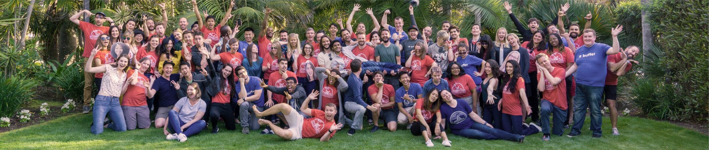

We’re a fully distributed team of 85 people living and working in 15 countries around the world. And we’re working to build the best products to help our customers build their brands and grow their businesses on social media.
We’ve always aimed to do things a little differently at Buffer. Since the early days, we’ve had a focus on building one of the most unique and fulfilling workplaces by rethinking a lot of traditional practices.
A commitment to supporting our team and our customers has helped Buffer grow from humble beginnings to now serving more than 140,000 users. Our passion for making meaningful connections flows through everything we do.
We care about building a quality product, trusted relationships with our customers, and a sense of community that connects our customers and team with one another.
To learn more about our approach to business and work, feel free to hop on over to our Open Blog.
We want to build a different type of company that’s focused not only on the bottom line, but also the happiness of our customers and team, and our personal growth along the journey. Here are the values that collectively guide our decisions and actions:

Transparency
We try our best to live up to our value of "Default to Transparency." Here's an overview of a few of the things we've made transparent at Buffer.
Salaries
All our salaries, and salary formula, are public.
Diversity
We've open sourced our diversity & inclusion data.
Open Source
All our code, free for anyone to use.
Product Roadmap
Everything we're researching & building.
Team
We’re committed to building a diverse team and a work environment that’s inclusive of people of all backgrounds. Get to know the wonderful team who’s building our product, supporting our customers, and creating educational content.